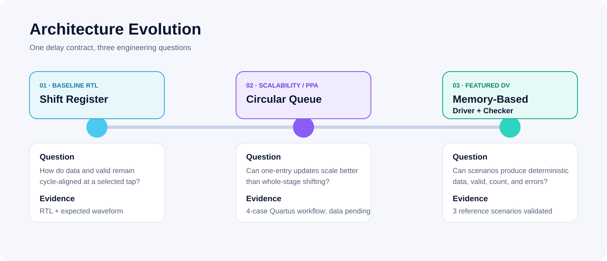
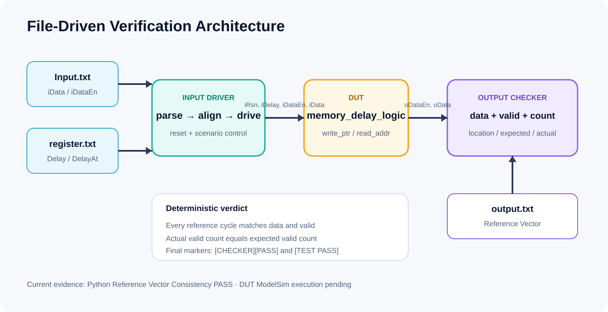
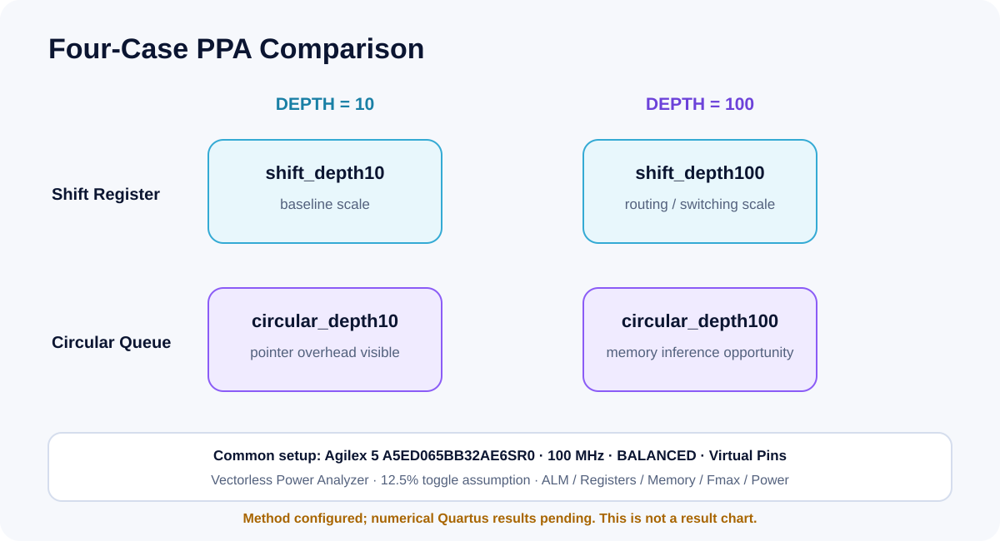
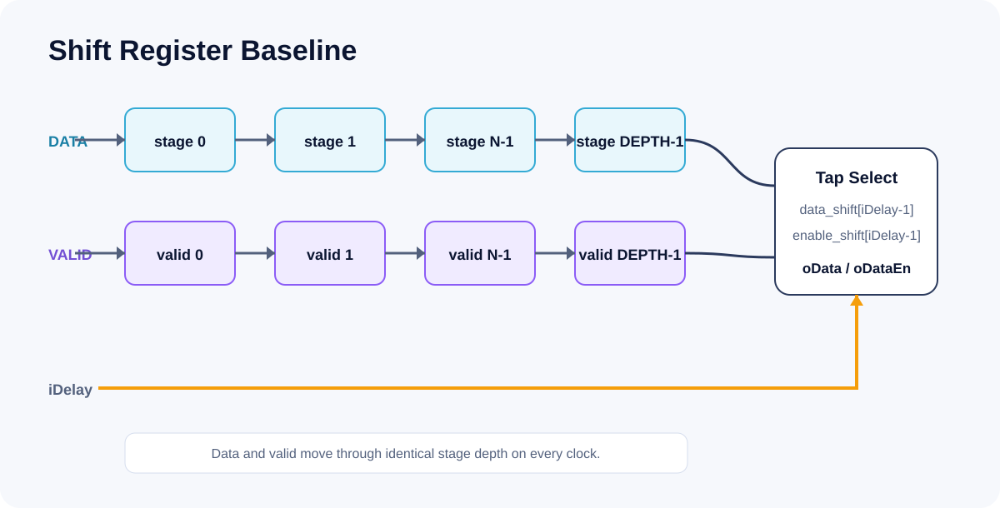

Data / valid alignment
Parallel storage paths maintain transactional timing while a runtime delay selects the historical sample.
One delay contract developed through RTL baseline design, circular-addressed architecture and PPA automation, then a file-driven self-checking verification environment.
Structural expectations, Python reference consistency, ModelSim execution, and Quartus analysis are reported as separate states. No missing commercial-tool result is replaced with a guess.
Parallel storage paths maintain transactional timing while a runtime delay selects the historical sample.
A single write slot, pointer wrap and modulo read address replace whole-stage movement.
Tagged vectors drive scenarios; the Checker validates data, valid and final output count.
The sequence moves from cycle correctness, to architectural scale, to repeatable verification without changing the underlying delay intent.

The strongest case study combines a memory-coded DUT, scenario parser, dynamic delay events, cycle comparison, count comparison and deterministic error reporting.

Project 3 holds the last valid oData when oDataEn=0, matching the authored sparse-valid reference sequence. Projects 1 and 2 instead force invalid data to zero.
Shift Register and Circular Queue are prepared at DEPTH 10 and 100 using the same target, clock, optimization mode, virtual-pin policy and vectorless toggle assumptions.

Quartus Prime Pro was not available in the assembly environment. The public flow includes four projects, report collection and a chart generator that refuses blank data.
No ALM, Fmax, power or reduction percentage is inferred. Vectorless power would be an estimate, not measured board power.
PPA methodologyData and valid move through identical stage depth, and iDelay=N selects index N-1. The baseline uses manual expected-waveform review by design.

The labels below distinguish source availability, reference consistency, actual simulation, synthesis and numerical PPA.
| Project | RTL Source | Simulation | Synthesis | PPA |
|---|---|---|---|---|
| 1 · Shift Register | Available | Not rerun | Not rerun | N/A |
| 2 · Circular Queue | Available | Not rerun | Not rerun | Automation ready; numbers pending |
| 3 · Memory DV | Available | ModelSim not run | Not rerun | N/A |
| 3 · Reference model | Python model | 3 scenarios validated | N/A | N/A |
Expected waveforms are not ModelSim captures. Reference PASS is not DUT PASS. Configured Quartus projects are not compilation reports. Vectorless estimation is not measured board power.
Project 3 needs both [CHECKER][PASS] and [TEST PASS] from an actual ModelSim run.
Fit, Timing Analyzer and Power Analyzer reports are the required basis for any advantage claim.
Original ZIP/DOCX files, course material, local databases and private links are not published.
The repository contains the three project directories, architectural diagrams, evidence matrix, local tool commands and open CI checks.
Open GitHub repository